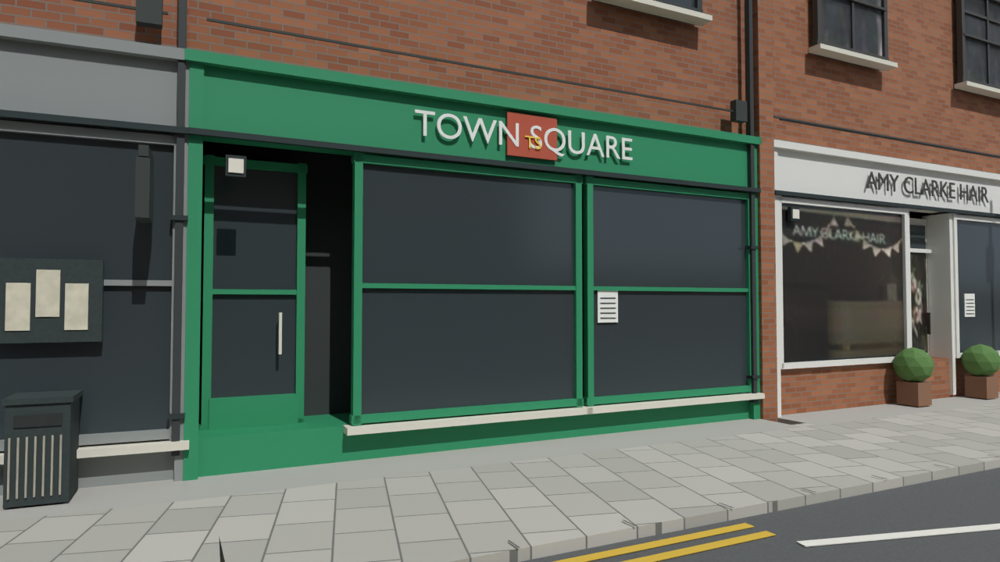
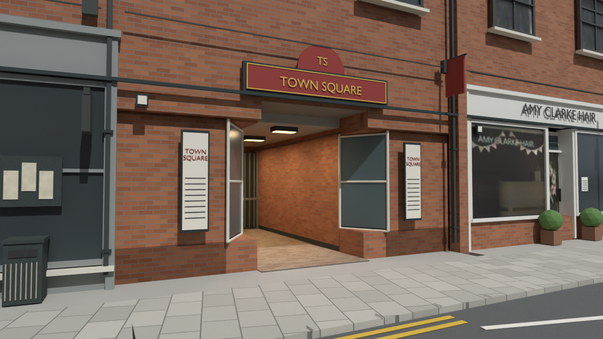
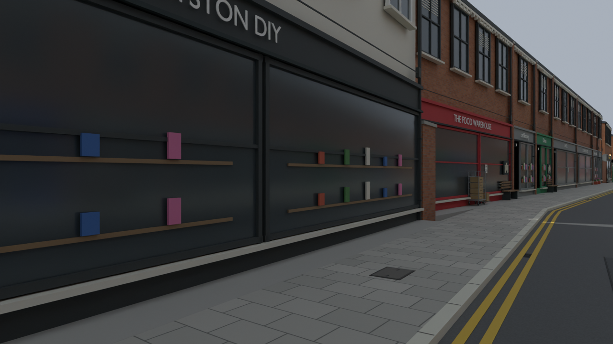
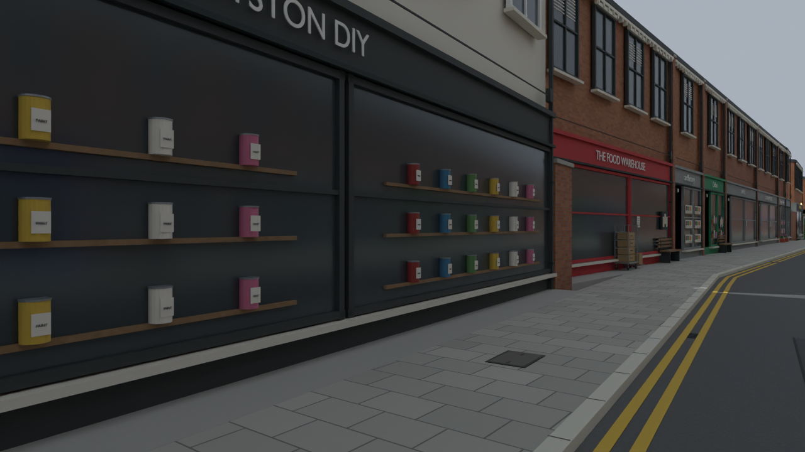
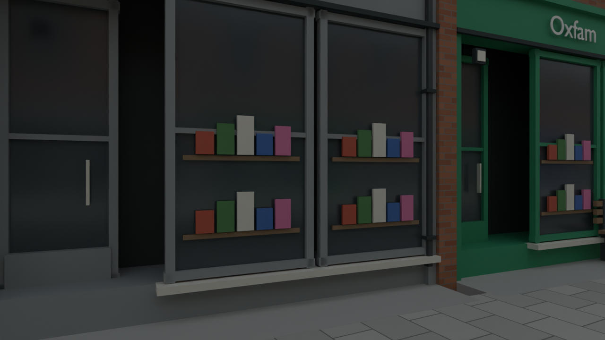
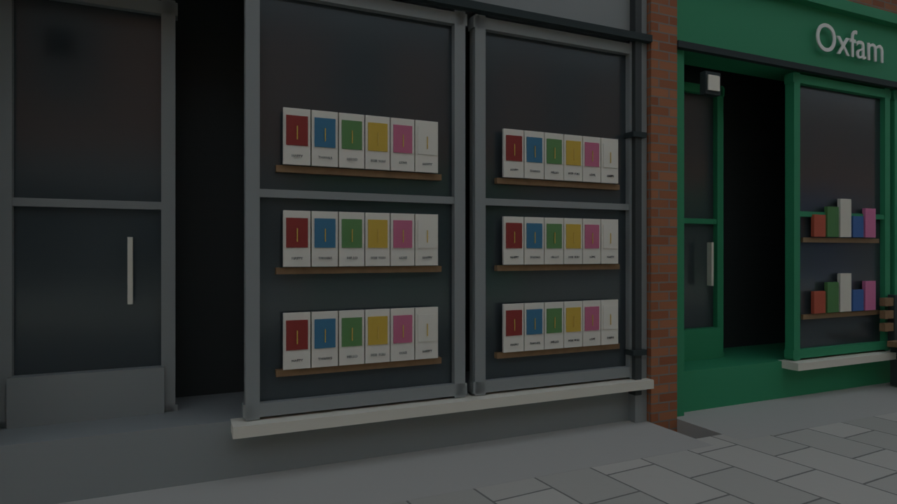
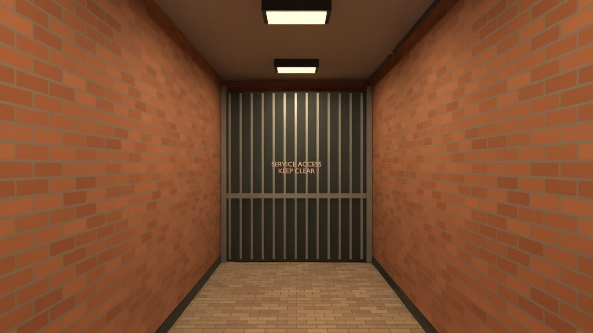
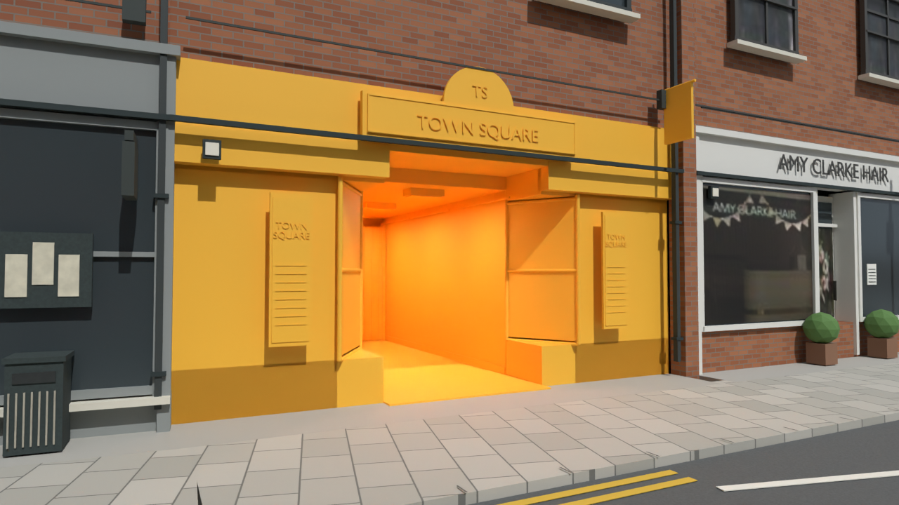

315 new closed meshes. A previously closed generic shop bay now has an enclosed recessed entrance with floor, brick sides, ceiling, warm lighting and a closed service boundary. Visible entrance follows native270; unseen depth and rear closure are gameplay adaptations.
Retained road/pub samples and 351 selected entrance/pavement samples pass; 37 enclosure rays pass. Original geometry is retained, including archived replaced parts. These are Blender previews, not BO3 gameplay or continuous collision tests.
Red/gold sign and crest, hanging banner, masonry entrance, framed directories and angled glazed bays.


Individual paint tins with metallic lids and labels replace generic merchandise blocks.


Layered greeting cards with coloured panels and small titles replace generic shelf blocks.


Continuous paving and enclosed sides/ceiling; the rear gate is static scenery. No purchase, unlock or connection to another building is implemented.

Temporary gold shows new geometry; it is not saved into the map.
